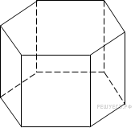
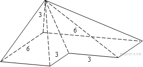
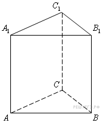
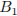
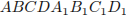
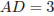

Тип Условие Ответ B11 245341. Найдите объем многогранника, вершинами которого являются точки
,
,
,
, правильной треугольной призмы
, площадь основания которой равна 3, а боковое ребро равно 2.
Тип Условие Ответ B11 245357. 
Найдите объем правильной шестиугольной призмы, все ребра которой равны
.
Тип Условие Ответ B11 245353. 
Найдите объем пирамиды, изображенной на рисунке. Ее основанием является многоугольник, соседние стороны которого перпендикулярны, а одно из боковых ребер перпендикулярно плоскости основания и равно 3.
--- ТРИ ПЕРЕДНИХ БОКОВЫХ РЕБРА ДОЛЖНЫ БЫТЬ ДАНЫ СПЛОШНЫМИ ЛИНИЯМИ ---
Тип Условие Ответ B11 245342. Найдите объем многогранника, вершинами которого являются точки
, ,
,
правильной треугольной призмы
, площадь основания которой равна 4, а боковое ребро равно 3.
Тип Условие Ответ B11 27137. Во сколько раз уменьшится площадь боковой поверхности конуса, если радиус его основания уменьшить в 1,5 раза?
------------
ЗАДАНИЕ НЕКОРРЕКТНО. ОБРАЗУЮЩАЯ И РАДИУС НЕ ЯВЛЯЮТСЯ НЕЗАВИСИМЫМИ ВЕЛИЧИНАМИ. СЧИТАТЬ, ЧТО ОБРАЗУЮЩАЯ НЕ МЕНЯЕТСЯ.
Тип Условие Ответ B11 245337. Найдите объем многогранника, вершинами которого являются точки
,
,
, , прямоугольного параллелепипеда , у которого
, , .
Тип Условие Ответ B11 245347. Найдите объем многогранника, вершинами которого являются точки
,
,
, правильной шестиугольной призмы
, площадь основания которой равна 6, а боковое ребро равно 3.
Тип Условие Ответ B11 245343. Найдите объем многогранника, вершинами которого являются точки
,
,
, ,
,
,
правильной шестиугольной призмы
, площадь основания которой равна 4, а боковое ребро равно 3.
Тип Условие Ответ B11 27206. Вершина
куба
со стороной 1,6 является центром сферы, проходящей через точку
. Найдите площадь
части сферы, содержащейся внутри куба. В ответе запишите величину .
Тип Условие Ответ B11 245336. Найдите объем многогранника, вершинами которого являются точки
,
, , прямоугольного параллелепипеда , у которого
, , .
Тип Условие Ответ B11 245340. Найдите объем многогранника, вершинами которого являются точки
,
,
,
правильной треугольной призмы
, площадь основания которой равна 2, а боковое ребро равно 3.
Тип Условие Ответ B11 27127. Около куба с ребром
описан шар. Найдите объем этого шара, деленный на
.
Тип Условие Ответ B11 27047. Сосуд, имеющий форму правильной треугольной призмы, налили 2300
воды и погрузили в воду деталь. При этом уровень воды поднялся с отметки 25 см до отметки 27 см. Найдите объем детали. Ответ выразите в
.
Тип Условие Ответ B11 27114. Объем правильной четырехугольной пирамиды
равен 12. Точка
– середина ребра . Найдите объем треугольной пирамиды .
Тип Условие Ответ B11 245338. Найдите объем многогранника, вершинами которого являются точки
,
,
, прямоугольного параллелепипеда , у которого , , .
Тип Условие Ответ B11 27174. Объем шара равен 288
. Найдите площадь его поверхности, деленную на
.
Тип Условие Ответ B11 245346. Найдите объем многогранника, вершинами которого являются точки
,
,
, ,
, , , правильной шестиугольной призмы
, площадь основания которой равна 6, а боковое ребро равно 2.
Тип Условие Ответ B11 245335. Найдите объем многогранника, вершинами которого являются точки
, ,
,
, , прямоугольного параллелепипеда , у которого ,
, .
Тип Условие Ответ B11 27122. Конус получается при вращении равнобедренного прямоугольного треугольника
вокруг катета, равного 6. Найдите его объем, деленный на
.
Тип Условие Ответ B11 318146. В правильной четырёхугольной пирамиде
с основанием
боковое ребро
равно 5, сторона основания равна . Найдите объём пирамиды.
Тип Условие Ответ B11 245345. Найдите объем многогранника, вершинами которого являются точки
,
, ,
,
, , ,
правильной шестиугольной призмы
, площадь основания которой равна 6, а боковое ребро равно 2.
Тип Условие Ответ B11 245339. Найдите объем многогранника, вершинами которого являются точки
,
, , прямоугольного параллелепипеда , у которого
, , .